N. Halsted St. from North Ave to Webster Ave. in Chicago’s Lincoln Park neighborhood has some excellent restaurants to visit. My top recommendations include:
Trattoria Gianni: This is a small neighborhood trattoria across from the Steppenwolf Theatre, at 1711 N. Halsted, that is always good. Their large outdoor patio is perfect during the summer months. I recommended the calamari fritti or fried calamari with a marinara dipping sauce, the chicken marsala with sauteed spinach and their yummy tiramisu. I love going before a performance across the street.
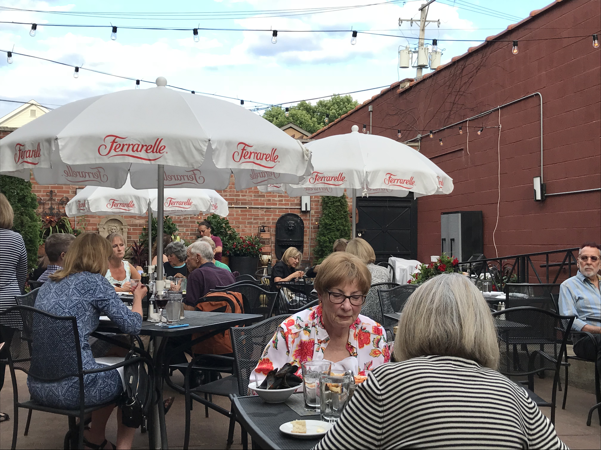
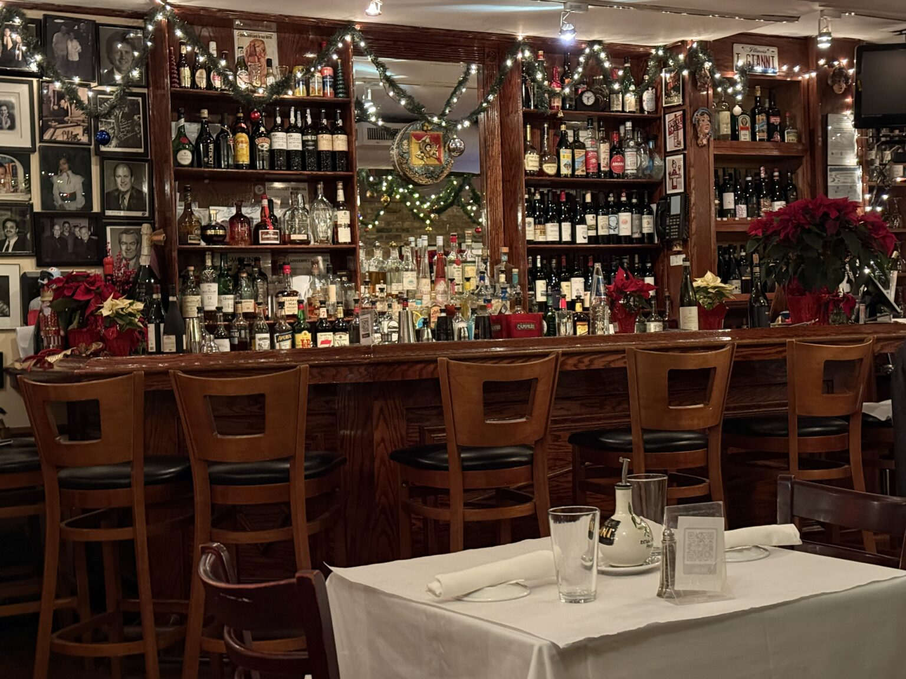
BOKA: The always popular and Michelin starred BOKA is located at 1929 N. Halsted near the Steppenwolf Theatre as well. Open for 23 years, it has received many James Beard nominations including a James Beard Award Finalist for Best Restaurant in 2020. Lee Wolen was also a James Beard Finalist for Best Chef Great Lakes in 2020. It also has had a one Michelin star since 2011. I always enjoy the experience!
I went back recently before my Steppenwolf play and really loved the food. It has a small, upscale menu with everything beautifully prepared and served. The halibut entree along with a caramelized hazelnut dessert were outstanding.
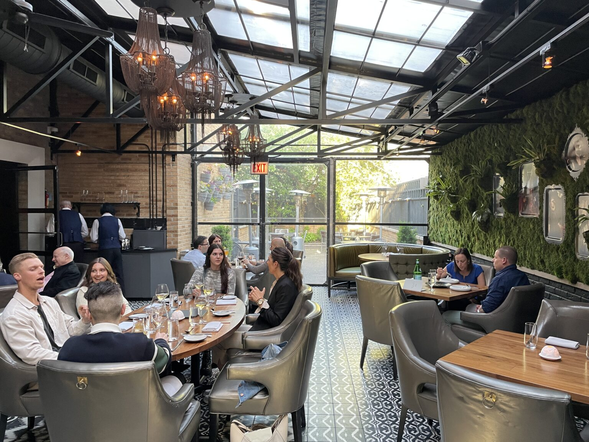
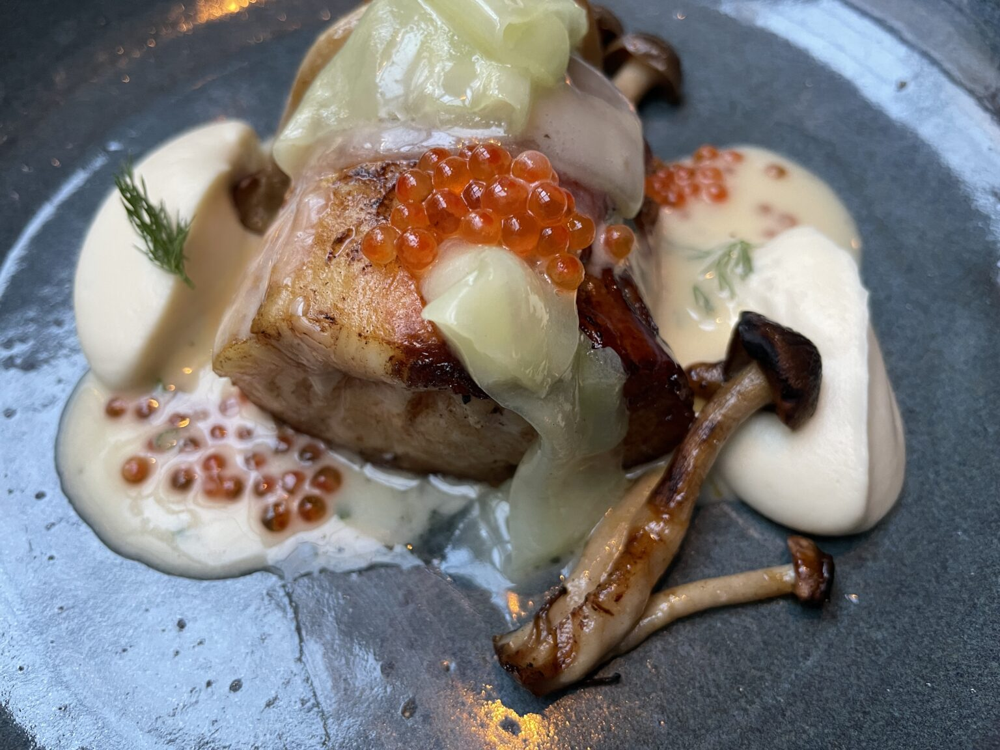
Vinci Restaurant: A long-time local’s favorite for Italian food, Vinci has great Italian dishes. I have been going for many years. I was just back and had the arugula and Belgian endive salad with pears, pecorino cheese and hazelnuts plus the hand-made squid ink tagliarini pasta with shrimp, calamari, spinach, tomato in a white wine sauce. I always love the traditional atmosphere. It is up the street from Steppenwolf Theatre. 1732 N. Halsted.
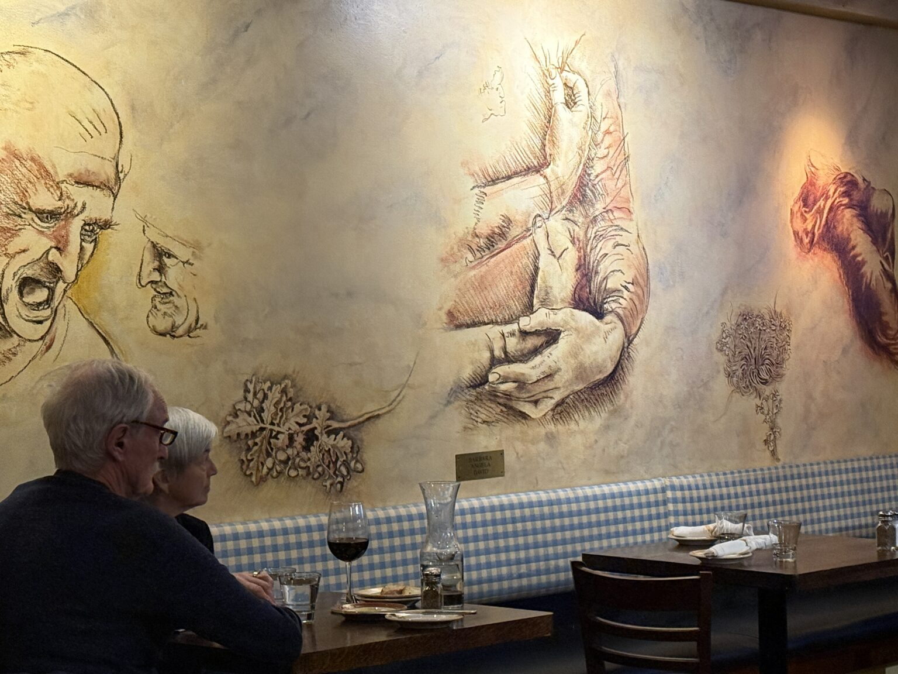
Across from Vinci is the Willow Room, at 1800 N. Halsted in the space formerly occupied by Black Duck Tavern & Grill. I went the first week it opened and enjoyed the food and atmosphere. I was just back before a Steppenwolf Theater play and thought the food was again excellent. They reopened in July 2023 after being forced to close for over six months due to damage caused by a water leak. I loved the beet salad, Key Lime Pie and the sea scallops. It was one of the best dishes I have had this year. The restaurant also has outdoor seating during the warmer months. I went back and had an excellent halibut entree.
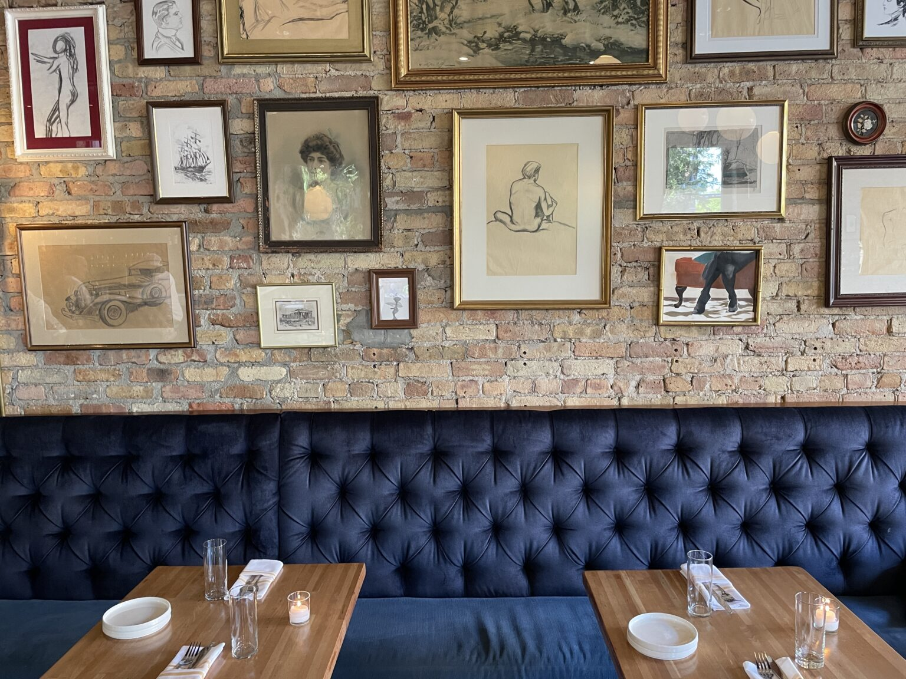
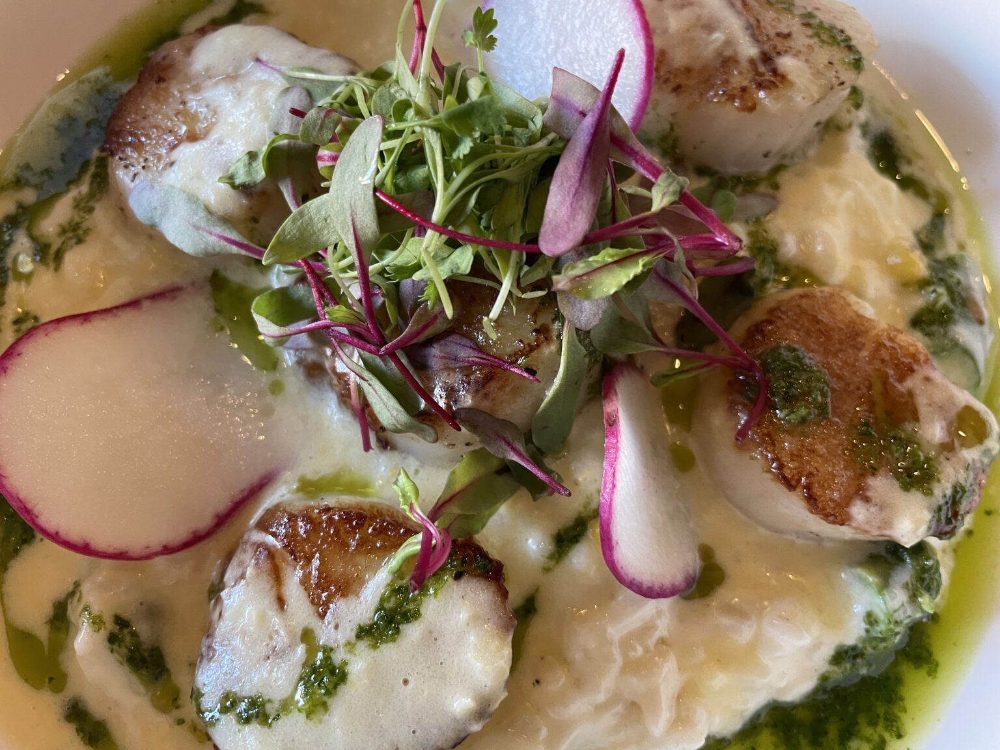
Summer House Santa Monica: At 1954 N. Halsted, this neighborhood restaurant has a wonderful light interior with really excellent food. It features California-influenced, American food and a wood-fire grill. I went back for lunch and really enjoyed the roasted pumpkin soup and harvest kale salad.
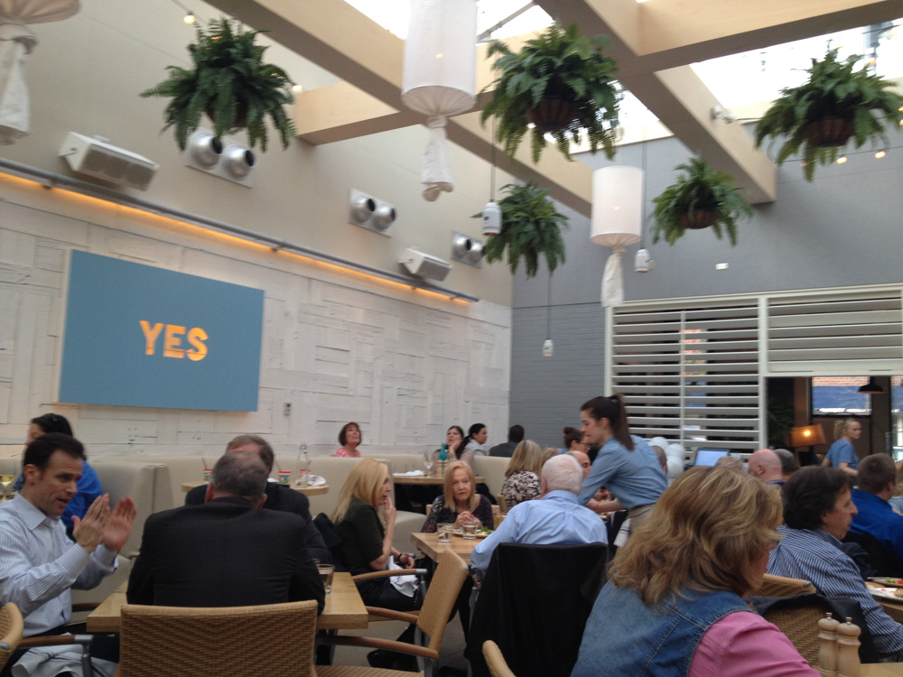
Directly across the street is a new find, J9 Wine Bar at 1961 N. Halsted. They have a large menu of wines from around the world along with craft cocktails. They also feature cheeses and charcuterie. You can sit inside or on their small patio to the north.
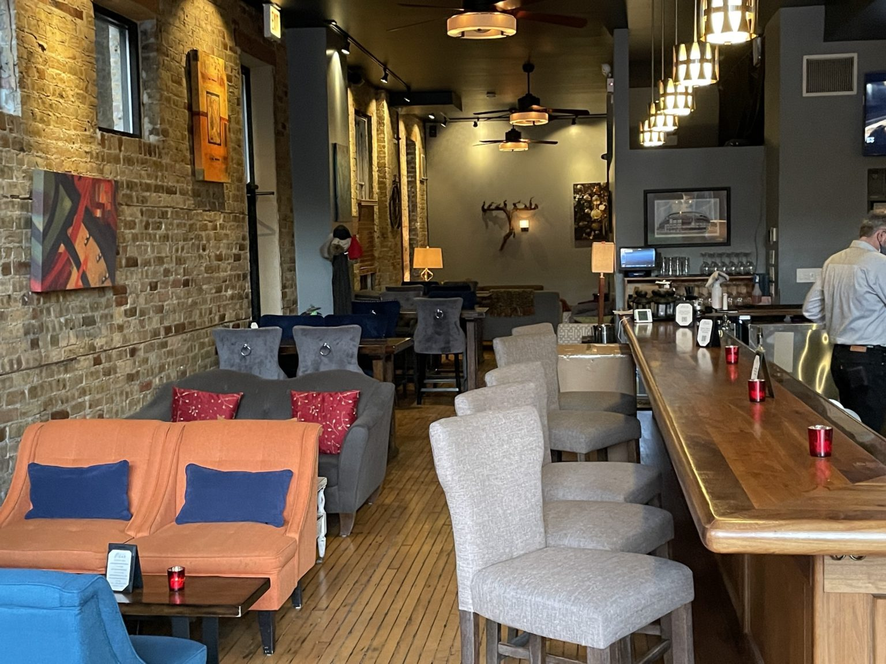
Next door at 1959 N. Halsted St. is Small Cheval. Opened in July 2024, this is one of the 10 locations of this popular local chain that is known for its burgers, fried chicken sandwiches and tenders, ice cream, milkshakes, sundaes and floats. I saw it for the first time and went in August 2025 for lunch. I enjoyed a great double cheeseburger and fries. It is a casual setting, with counter service, and is very popular especially for families with children. I enjoyed my first visit.
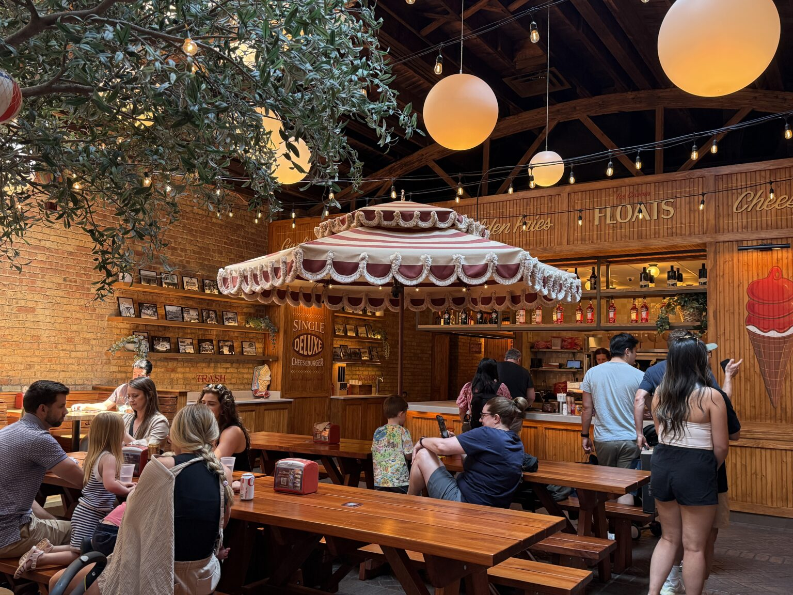
Soul Prime, opened in 2023, is an elevated, Black-owned, soul food restaurant in Lincoln Park. It is open for dinner every day but Sunday, and for brunch on Saturday and Sunday. I enjoyed the shrimp and grits for Sunday brunch. 1969 N. Halsted St.
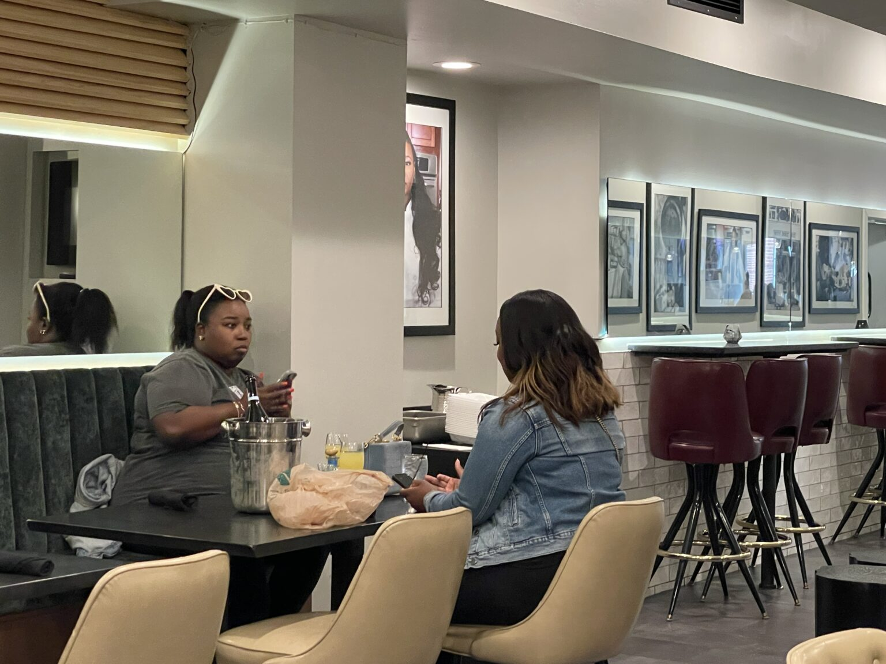
Across the street is Leonidas Chocolate Cafe. This is a small cafe featuring Belgian chocolates, French pastries and macarons, espresso and coffee drinks, sweet and savory crepes, Belgian waffles, croissants, croissant sandwiches, omelettes and quiches. Their newest Chicago location is located at 1964 N. Halsted St. in Lincoln Park. I really enjoyed the croissant sandwich with brie, prosciutto and fig jam along with a great latte and an almond tart. Our server was very helpful and friendly.
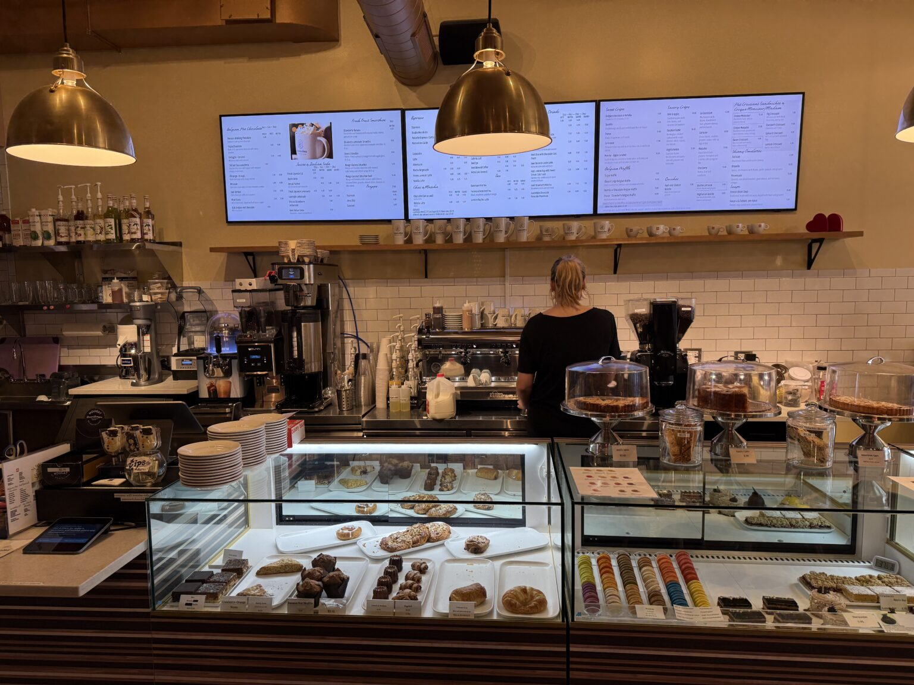
Next door is Pasta Palazzo at 1966 N. Halsted St. This is a casual, Italian restaurant with a large menu of soups, salads, sandwiches, pastas and other Italian specialties. I went for lunch last month and enjoyed the crab ravioli with a creamy roasted tomato sauce and yummy tiramisu. I look forward to going back. They offer daily specials.
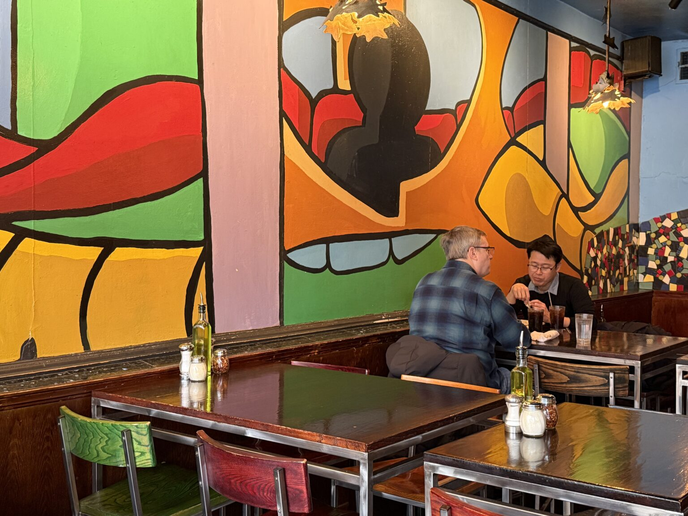
Blue Door Farm Stand at 2010 N. Halsted, just north of Armitage, is a fun, casual cafe, on two levels, that serves an excellent farm-to-table menu. I always enjoy the food and the casual atmosphere. The kale salad and salmon entree were very good. I just went back for lunch and enjoyed a grilled cheese sandwich and tomato soup.
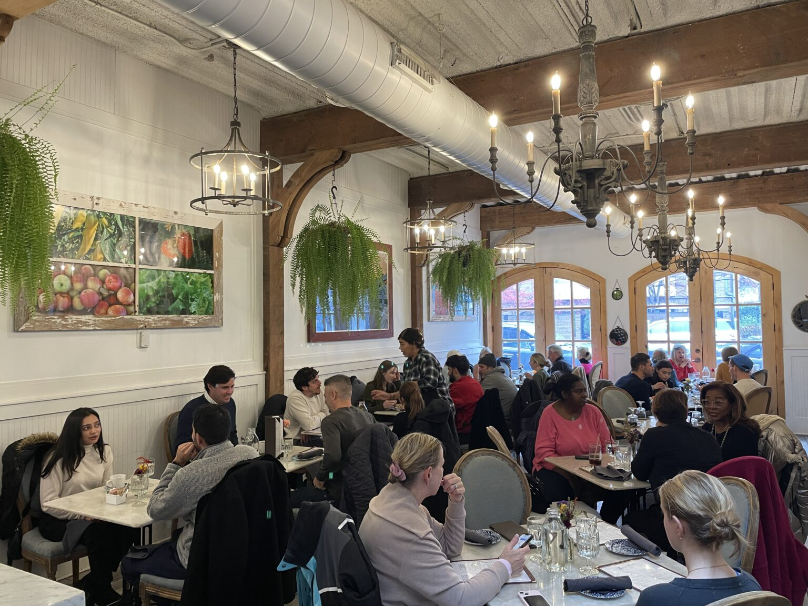
Just north on Halsted is the long-time favorite, Café Ba-Ba-Reba for Spanish tapas at 2024 N. Halsted. Celebrating 40 years in business, it is a great neighborhood spot with a great vibe and food. I love the menu that can be shared, including the Spanish omelette and seafood paella. I went back again after several years and enjoyed the same menu along with a tasty flan for dessert. Our server was excellent. They also have a large outdoor patio.
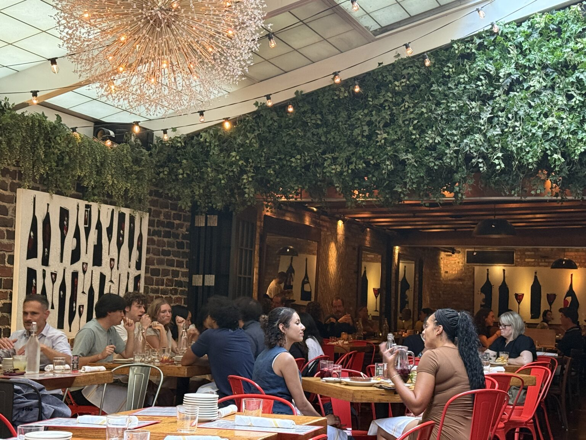
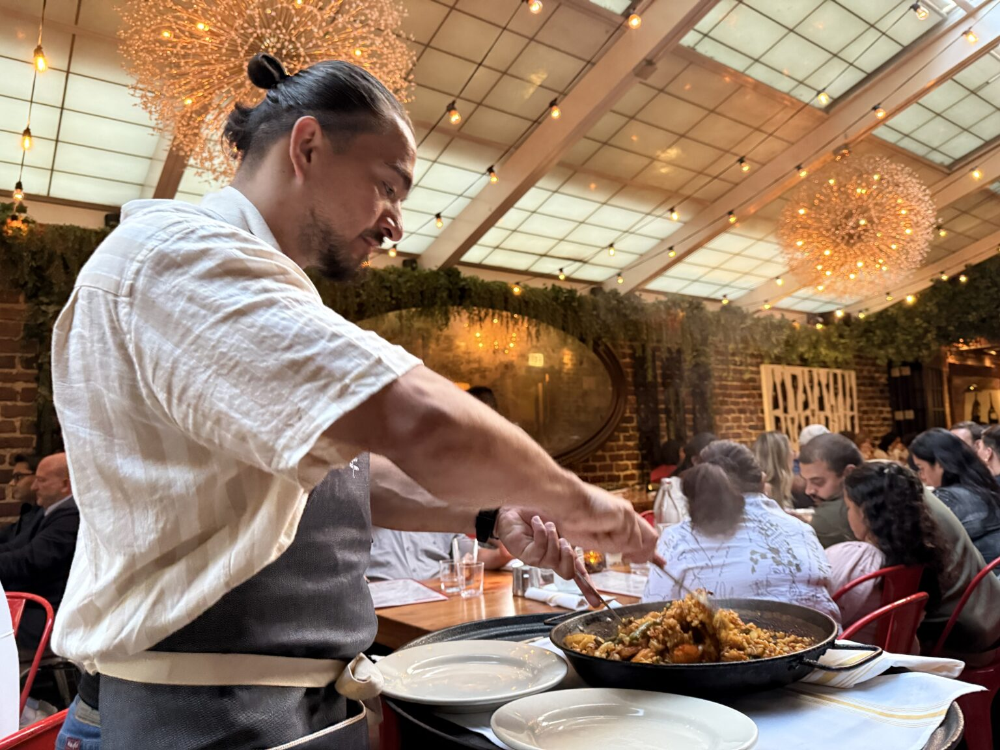
Just north is the new, upscale Thai restaurant, Charoen Krung by Sathorn at 2100 N. Halsted. I went with a local friend after seeing that it had opened in early 2025. It has a creative menu of Thai tapas, entrees and desserts. We both thought the food was excellent. We shared the duck sliders, the steamed pork and shrimp dumplings, the Pad Thai with prawns and a mango sticky rice. The design of the space is also beautiful. They do have an outdoor terrace for dining during the warmer months.
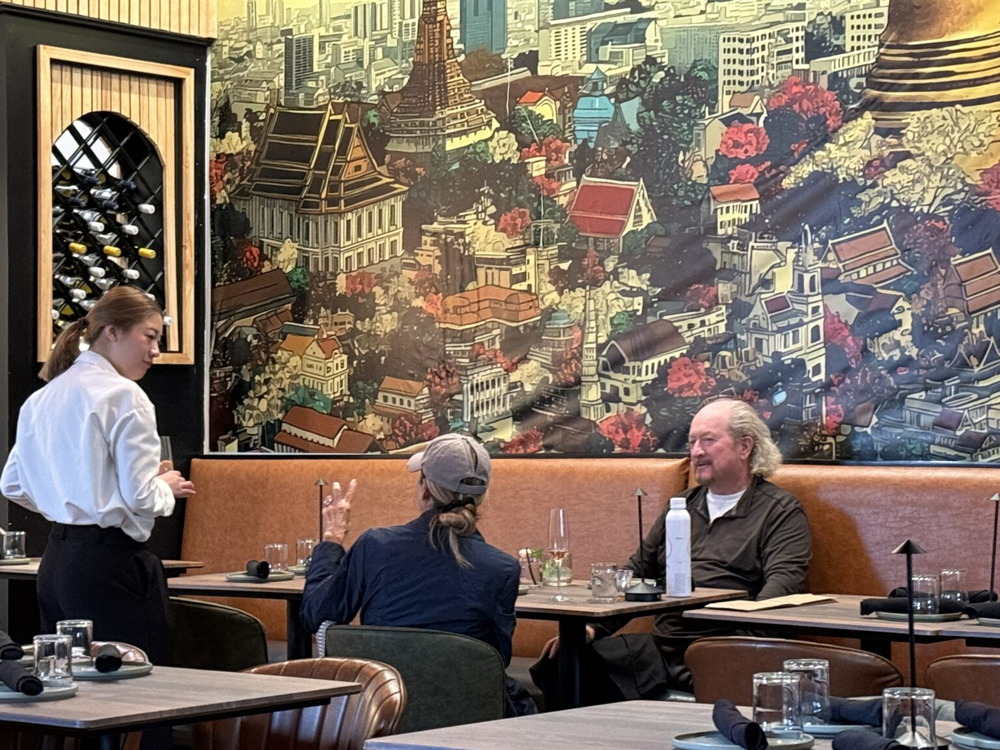
Further up the street is a new neighborhood restaurant John’s Food & Wine at 2114 N. Halsted. Located in the old Nookies Too space, it is a seasonal American restaurant that is open for lunch and dinner, except on Tuesday. You order at the bar/counter and then you are served at a table. I popped in for lunch on a Saturday on a chilly February day. I really enjoyed my fried fish sandwich with a celery root slaw. Their dinner menu looks excellent as well. I enjoyed meeting the two owners, Adam McFarland and Tom Rogers who met while working at Gramercy Tavern in New York City.
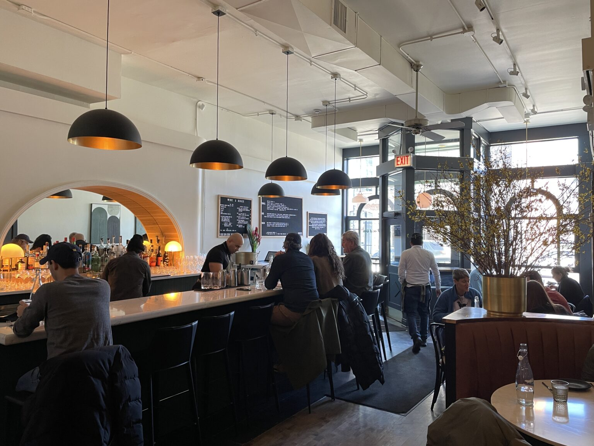
Just to the north is Medi Kitchen & Cocktail at 2138 N. Halsted. This is a Mediterranean restaurant with a Lebanese-inspired menu with a modern twist from the family recipes of the owners who are from Lebanon. It has a large menu including falafel, hummus, baba ghanoush, kababs, salads and desserts. The baba ghanoush was excellent as were the lamb kababs served with rice. My friends enjoyed their chicken kababs and chicken shawarma kebabs. It is a lively, popular spot, so I recommend making a reservation online.
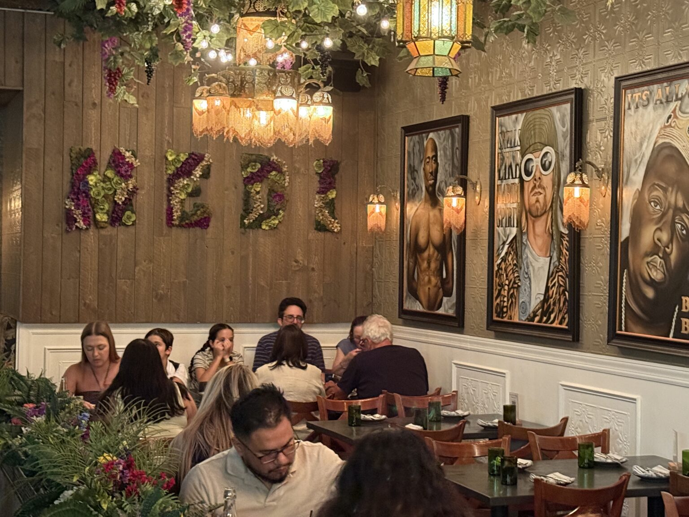
In the same block is The Kismet Table at 2142 N. Halsted. This is a beautiful space that sells cookbooks, to-go provisions, small-batch gourmet products and housewares. They have prepared foods that you can buy along with artisan cheeses and charcuterie. Chef Tayrn Huebner was Oprah Winfrey’s personal chef for over ten years. On their website she says that, “as if my decade cooking for Oprah Winfrey isn’t reward enough, I’ve had the incredible honor to cook for many of her high-profile guests including former President Barack and First Lady Michelle Obama, The incomparable Gayle King, Sarah Ferguson, Duchess of York, a bevy of the Hollywood elite, and of course, my absolute idol, Dr. Maya Angelou. I’ve led cooking classes at the Oprah Winfrey Academy for Girls.”
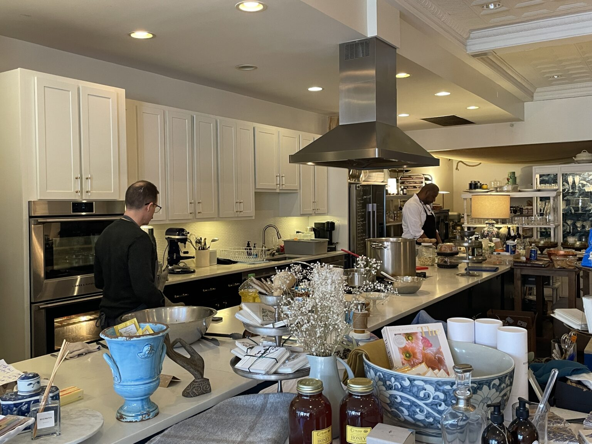
Around the corner is Brown Bag Seafood Co. at 746 W. Webster Ave. This is a chain of seafood restaurants in Illinois and Georgia. They have several others in Chicago. The menu has a number of fish and seafood entrees, salads and sandwiches. I thought the lobster roll was excellent.
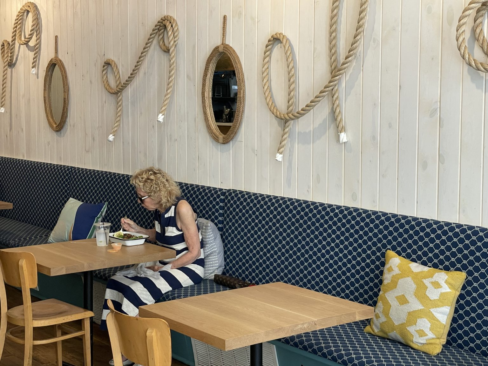
I hope you enjoy my recommendations.
For more of Bob’s travel recommendations visit Globalphile.com.